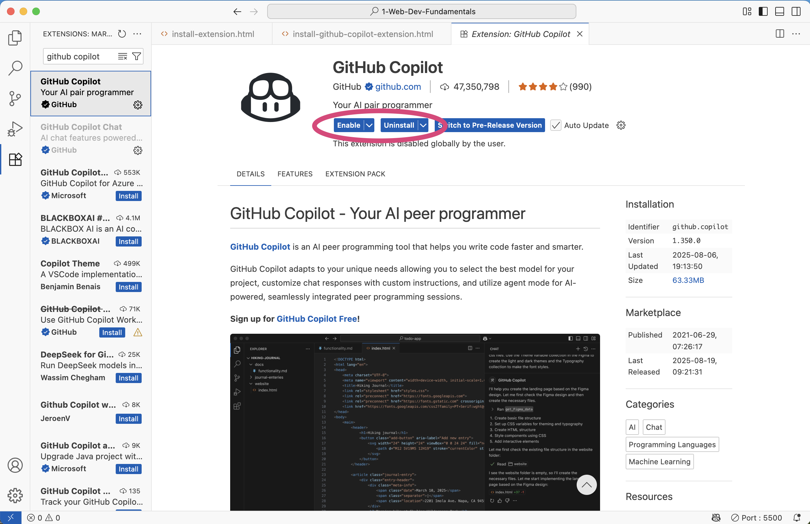

Installation Instructions
-
In Visual Studio Code, click the
 Extensions icon in the left toolbar.
Extensions icon in the left toolbar.
-
In the search bar that appears, type GitHub Copilot.
-
Select the GitHub Copilot extension. It should be the top choice.
-
In the page for GitHub Copilot that appears, click the green Install button.
-
Go back to the search bar at the top of the Extension tab and type GitHub Copilot Chat
-
Select the GitHub Copilot Chat extension. It should be the top choice.
-
In the page for GitHub Copilot Chat that appears, click the green Install button.
Usage Instructions
-
In Visual Studio Code, click the Extensions icon in the left toolbar.
-
In the search bar that appears, type GitHub Copilot or GitHub Copilot Chat.
-
Select the extension you want to access.
-
Once installed, you can enable/disable or uninstall GitHub Copilot as needed.
